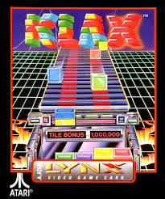
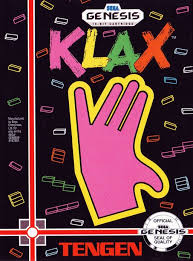

Interview With Mark Pierce, Creator of Klax
Article Published by Cameron at 2026/05/12 9:25 PM CET
It is the Nineties and there is time for Klax!
We sat down with Mark Pierce, creator of Klax!
Mark agreed to spill all of the details on the origin, development, and spread of Klax! We at SusFeed are honored to get such a momentous interview with the mind behind one of Atari's most enduring arcade games, so it was a bit difficult to find where to start.
So, we decided the start would be a pretty good place to start.

The Origins of Klax
We began by asking Pierce about the unusual development history behind Klax and why the game seems to appear in almost every major corner of Atari history.
Cameron: “There has been one game that consistently comes up in all aspects of Atari history. It was the final game for the 2600, one of Atari’s last successful arcade games, and it was ported to an interesting amount of consoles.”
Mark Pierce: “Yeah, I was the designer and the artist on it. It was my concept. Dave Akers was the engineer and it was basically just the two of us. We did that game in four months.”
Pierce explained that Atari had been searching for a successful puzzle title after the explosive rise of Tetris.
Mark Pierce: “Tetris had just been a hit, and Atari president Hideyuki Nakajima said we needed a puzzle game for the ATI show in London. I raised my hand and said, ‘I can do that.’”
Mark Pierce: “I sat there for probably a week or two just playing with squares on the screen. I didn’t want to do another Tetris or another match-three game. I wanted to do something different.”
According to Pierce, the game’s conveyor-belt mechanic came together extremely quickly once the prototype existed.
Mark Pierce: “David Akers mocked something up over the weekend on the Amiga. We both played it and immediately thought, ‘Oh, there’s something here.’”

The Meaning Behind the Name
We also wanted to know what exactly “Klax” was supposed to mean. The game’s surreal backgrounds and strange title have puzzled us.
Cameron: “What exactly is Klax? What are Klaxes?”
Mark Pierce: “It came from the sound of the tiles flipping. Click-clack, click-clack. And X’s are cool, so I put an X in it.”
Pierce revealed that even the game’s iconic k-shaped hand logo was improvised during development.
Cameron: “Was it intended to look like a K?”
Mark Pierce: “That was part of it. But honestly I just thought of the hand while driving to work one day.”
The bizarre backgrounds, ranging from forests to factories to abstract scenery, also had no particular rationale behind them.
Cameron: “The game has this weird factory conveyor-belt setting with forests and outer-space backgrounds. Was there any deeper context?”
Mark Pierce: “No, it was mostly whimsy. Puzzle games usually just dress up the outside edges.”

Ported to Everything
During the interview, Pierce repeatedly emphasized just how aggressively arcade games were ported during the late 1980s.
Mark Pierce: “If you had a successful arcade game, you ported it to whatever platforms were available no matter how technologically incapable they were.”
Klax was no exception.
Mark Pierce: “It got ported to everything. Spectrum, handhelds, consoles. It was ridiculous.”
Cameron: “The Lynx version was actually the version I found imported to Japan when I lived there.”
Mark Pierce: “Yeah. It actually worked really well on the Lynx.”
Pierce also confirmed that he and Dave Akers personally handled the Sega Genesis port.
Mark Pierce: “Dave and I did the Genesis port ourselves. That only took a couple months.”

The Final Atari 2600 Game
One of the biggest surprises of the interview was Pierce learning, in real time, that Klax is considered the final officially released Atari 2600 game.
Cameron: “Are you aware that you made the final Atari 2600 game?”
Mark Pierce: “No. Was it Klax?”
Cameron: “It was Klax.”
Mark Pierce: “Oh wow. That’s a very interesting piece of information.”
Pierce stated that fans often know more about the game’s release history than he does.
Mark Pierce: “There’s a website out there where people know more about Klax than I do.”

Arcades, Tengen, and the Industry
The conversation eventually expanded into Atari’s corporate history, the arcade scene of the late 1980s, and the era of Tengen.
Mark Pierce: “The arcade led what hardware was.”
Pierce explained that Atari’s publishing label Tengen was formed so the company could release ports independently rather than relying on outside publishers.
Mark Pierce: “Tengen published all our games. We’d hire outside developers for ports, but Klax worked out well because it was such a simple game.”
We also briefly discussed the Nintendo vs. Tengen Tetris lawsuit.
Mark Pierce: “There was a huge lawsuit around Tetris because Tengen reverse-engineered Nintendo’s lockout chip.”

Looking Back on Klax
Toward the end of the interview, Pierce reflected on the simplicity of Klax and why he believes the game still resonates with people decades later.
Mark Pierce: “It was probably the easiest game I ever made in terms of effort.”
Mark Pierce: “Simplicity is great. If you can do something simple that catches on, that’s a beautiful thing.”
More than thirty five years later, Klax remains one of Atari’s most inriguing successes. A puzzle game developed in four months that somehow bookended the Atari 2600 era.